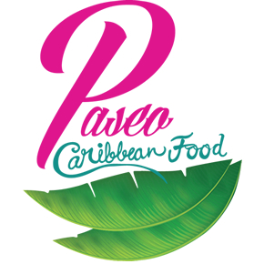
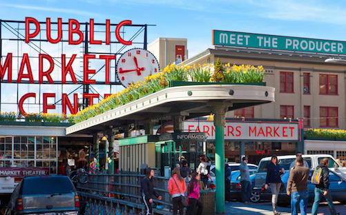
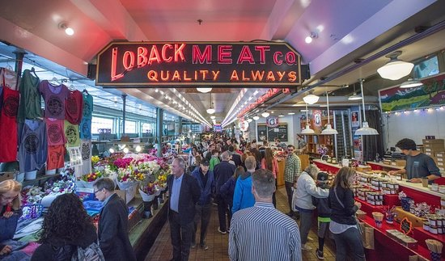

Top 5 Places to Visit in Seattle
Mount Rainier
Background: Mount Rainier is the highest mountain in the Cascade Range, located 59 miles south of Seattle, WA in Mount Rainier National Park. It is technically classified as a large stratovolcano that is active. It is home to some of the most scenic glaciers known to man, and is topped by two volcanic craters. The most recent recorded volcanic eruption was between 1820 and 1854, but many eyewitnesses reported eruptive activity in 1858, 1870, 1879, 1882, and 1894 as well. It's definitely worth visiting but stay safe!
Popular Activities at Mount Rainier:
- Wildflower Viewing
- Mount Rainier Railroad
- Hiking Sunflower Trails
Colombia Center
Background: Contrary to popular belief, the Space Needle is actually not the tallest buildling in Seattle. The Colombia Center, formerly known as the Bank of America Tower, is a skyscraper that is 76-stories tall. It reaches a height of 933 ft, and when it was first built, it was the tallest buildling in the West Coast. As of 2017, it is the fourth tallest building in the West Coast. But this building still has the tallest observatory/viewing deck West of the Mississippi and provides a great view of the entire city.
The Amazon Spheres
Background: These are three spherical conservatories on the headquarters campus of Amazon in the heart of downtown Seattle. It was designed by NBJJ, an architecture firm known to be one of the greenest in its efforts to decrease their buildings' fossil fuel consumption. Although the spheres are generally reserved for Amazon employees, it is open to the public through weekly headquarters tours and an exhibit on the ground floor. The stairwell shaft is covered by a four-story "living wall" with 25,000 plants, including carnivorous species from Asia. The spheres have 40,000 plants from 50 countries and are divided into three areas, with the western and eastern domes segregated into the Old World and New World.
Paseo Caribbean Food
Background: Paseo has been a sandwich icon to the Seattle community for over 21 years and has been recognized by legions of top critics, magazines and TV shows worldwide. The restaurant only uses local fresh ingredients in its sandwiches and is beloved among Seattle residents. It's a must try.
Popular Items:
| Sandwich Name | Description |
|---|---|
| Caribbean Roast | Roasted pulled pork shoulder, aioli, cilantro, romaine, jalapenos, & caramelized onions |
| Paseo Press | Roasted pulled pork shoulder, smoked ham, Swiss cheese, aioli, cilantro, banana peppers, & caramelized onions; melted in a hot press |
| Smokin' Thighs | Roasted skin-on chicken thighs, aioli, cilantro, romaine, jalapenos, & caramelized onions |
| Tofu Delight | Organic tofu, aioli, cilantro, romaine, jalapenos, & caramelized onions |
Pike Place Market
 
Background: Pike Place Market is a public market overlooking the Elliott Bay waterfront in Seattle, Washington, United States. The Market opened August 17, 1907, and is one of the oldest continuously operated public farmers' markets in the United States. Walk around for a little bit, you'll find some cool things sold by local vendors!